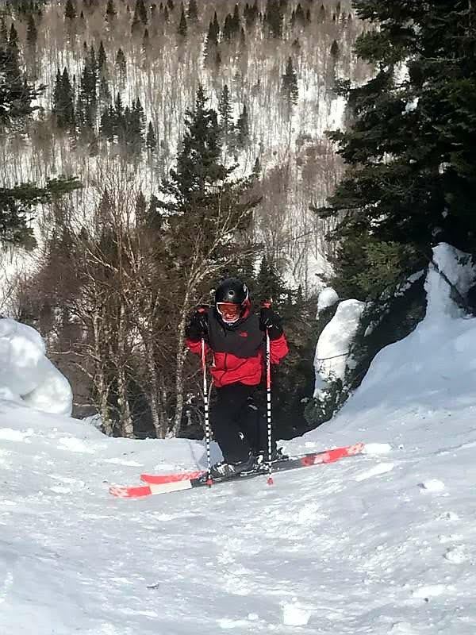
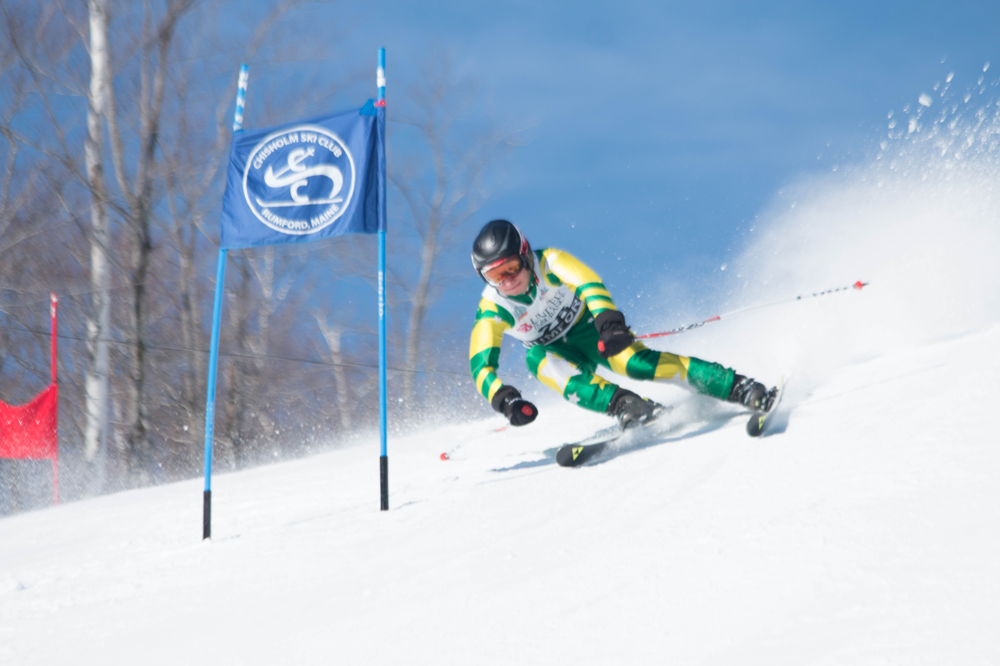
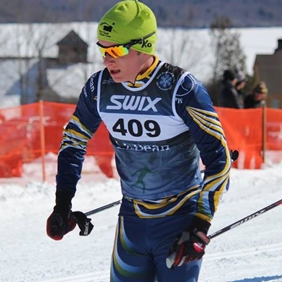

Skiing has been a hobby and obsession of mine since birth.
I got super competitive in ski racing in high school. I raced both Nordic and Alpine skiing. I loved both of them. Alpine allowed me to go fast and be fearless, but Nordic allowed me to push my body to its limits. Our ski team was State Champs for my 4 years of high school and it was special to be a part of. I was awarded the Skimeister Award for Aroostook County in grades 10,11,12 and State Skimester Award grades 11 and 12. This award is given to the skier who finishes best in both their Alpine and Nordic positions combined

Junior and Senior year I also earned a spot on the Maine State Nordic Ski team. We raced at Rikert Center in Vermont Junior year and Mountain Top Inn in Vermont again Senior year.
